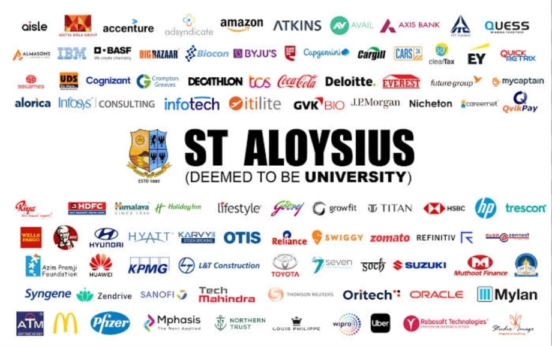

We help students secure positions in top organizations across the globe. The Placement Cell of our college is dedicated to guiding students toward rewarding career opportunities by connecting them with reputed organizations and equipping them with essential professional skills...
The Placement Cell at St Aloysius College bridgos students wllh top recruitlers, olflaring training, internships, and career counseling services. The Placement Cell at St Aloysius College is a dynamic and proactive departmønt that plays a cruciaÏ role in gulding students toward promising prolessional careers. With the ever-evolving job market and increasing compeliion, the Placemont Cell sorves as a bridge belween stucdents and industry, ensuring that every ellgible studentl gels a falr opportunity to showcase thelr talent to top recrullers. The cllis ot to organize on-campus placement drives il inviling engaged in preparing students for the prolessional worid throughoui thelr academic joumney. One ol the primary tunclions of the Placement Cellis limiled lo jusi conducling recrulmnont drives; by is activoly Dnownad companies from various soctors, including Informalion Technology. Finanče, Consuling, Education, Media, and more. Over the years, the colloge has witnossed an impressive increase in the number of recruilers visiting the CamDus Companies like Infosys. Wipro, TÉS. Cognizant, Deloitte, Capgemini, and many others have offlered attractive roles to our students in fields ranging from software skills. These include aplilude and logical reasoning practice, group discussion sessions. mock interviews, technical skll workshops,r resume writing tips. and soft skildevelopmeni. a wide range of essenlial developmenl and data analysis to HR, markeling, and business operalions. To ensure that students are placement-ready, the cell provides exlensive iraining programs thal cover Special emphasis is placed on communication and interpersonal skils,: as those are often daciding factors in interviows. The also collaborates with exlornal training partners and alumni working in th0 industry to conduct guost lectures and mentorshin sessions. Apart from final placements, the Placement Call also facilitates internship opportuniies lor students, particularly in their pre-final year. Internships help students gain valuable induslry exposure, buld prolessional networks, and oflen lead lo pre-placement offers. The cell aintains slrong connections with companies and instlitutions thal regularly offer internships acros domains such as IT, blotechnology, finance, and media. Moreover, the Placement Lll wOiks closely with academnic departments ensure thal students meet the lilgibilty crileria and academic standards required by top employers. Il maintain a database of studønt profiles, porformance motrics, and preforences to malch thor offoctivoly with the right opportunilis. Feodback from recruitlors is also colloctlod lo idontify areas of improvemenl, which in turn holps tho cell nhance its training stralegios year after year. In conclusion, the Placerent Callol Si Aloysius Colloge is nol just a departmon t it is a vilal support system for students aiming lo transilion smoothly from education to employment. With its student-centric approach, industry collaborallon, and focus on holistic development, the Placement Cell coninues to uphold the College's mission of empowering students lo become competent and conilident professionals in heir choser lields.
